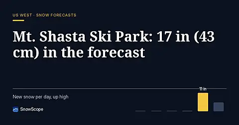
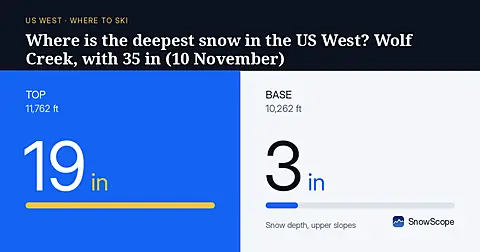

Snow reports · US West
Daily snow reports for skiers: where the snow is, what is coming and where to ski, from the SnowScope snow map and measuring stations. Every number comes from that day's data.

Our snow model forecasts up to 199 cm across the US West in the next two weeks, with the heaviest snow arriving in week one. Data from 21 November 2026.

Mt Baker will see 22 cm of new snow by November 24, but the freezing level rises above 1,000 m on November 22, bringing rain-on-snow risk to lower slopes.

The National Weather Service expects 10 to 20 inches in the Wasatch from Thursday to Saturday. Where Utah's snowpack stands against past winters, why Utah snow is lighter, and when to ski.

What the measured snow gauges say about the North Lake Tahoe storm, why the first snow is heavy and wet, and how Sugar Bowl, Northstar and Diamond Peak compare with 46 winters.

About 28 inches of new snow at Mammoth and 26 inches at June Mountain on 18-19 November. What the storm is, how it ranks against past winters, and the best days to go.


Deer Valley ski conditions on 13 November 2026: no real snow on the ground yet, about 4 in near the top from the weekend storm, rain on the low East Village side below about 6,700 to 7,600 ft, and 11 in up top over the week.

Park City, Utah snowfall forecast for 13 November 2026: almost no snow on the ground right now, about 5 in near the summit from the weekend storm with a snow level of 7,400 to 7,700 ft, rain at the base, and about 12 in up top over the week.

Alpental snow forecast for 13 November 2026: about 1 in on the upper mountain, rain almost to the summit this weekend with a snow level near 5,400 to 5,600 ft, then 4 to 5 in of mixed rain and snow up top next week.

Bogus Basin snow check for Boise skiers on 13 November 2026: no snow on the ground yet, rain and mixed snow this weekend with a snow level near 6,300 to 6,800 ft, then colder air and about 8 in at the summit by next week.

Telluride has 39 inches today. Peak snow weeks historically arrive in late December and March, not November.

Telluride's mid-slopes show 9 in (24 cm), running 92 percent of the seasonal average for mid-November. Saturday's system adds 5 in (13 cm) mostly above 10,000 ft.

Forecast from November 12: US West gets 11 in (27 cm) of new snow Saturday November 14; 56 resorts receive powder, busy week starts.

Freezing level climbs to 13,000 ft (3,960 m) at Aspen Snowmass, creating rain-on-snow risk as temperatures warm mid-November (forecast from 11 Nov data).

Mt. Shasta Ski Park is forecast to receive 17 in (43 cm) of new snow through November 14, with the most at high elevations (model run November 11).

A storm on November 4 left 8 to 13 inches of new snow at five high Colorado stations near Aspen. Five days later, half of it was gone. What that means for powder days.

Wolf Creek leads with mid-slope snow at 361% of normal for November 10, well ahead of typical and signaling significant water storage in the mountains.

Vail in numbers: a usual peak of about 64 in (162 cm) at mid-mountain over 46 past winters, March the deepest month, plus terrain, access and safety.

Steamboat, Colorado, for families: what works for toddlers, school-age kids, teens and parents, with the snow of 46 past winters at three heights.

How to spend a first day at Park City Mountain, Utah, and when to go: our snow history gives about 71 in (180 cm) at the usual mid-mountain peak over 46 past winters.

Mt Baker, Washington: about 133 in (337 cm) at the usual peak at mid-mountain in 46 past winters, a world snowfall record, no lodging on the hill, and what that means.

Plan Mammoth Mountain by season: about 93 in (235 cm) at the usual peak at mid-mountain over 46 past winters, March deepest, long springs, and winters that swing.

Getting to Telluride in winter, airport by airport: Telluride Regional, Montrose, the drive on Highway 145 with the Colorado traction law, and the free gondola to Mountain Village.

Big Sky, Montana, made easy to picture: 5,850 acres under Lone Peak, and snow that is about five times deeper near the top than at the base in 46 past winters.

Aspen Snowmass compared: Snowmass has about 75 in (190 cm) at the usual peak at mid-mountain over 46 past winters, Aspen Mountain about 69 in (174 cm). Terrain, access, safety.

Aspen Snowmass at 5 centimetres, 23 percent of normal for mid-November. Freezing levels above 2,600 metres brought rain instead of snow across the US West on November 8.

Telluride holds 115 cm (45 in) on 8 November. The freezing level climbs to 4,280 m (14,042 ft) on 9 November, bringing rain-on-snow risk to the highest slopes.


Mt Baker will receive 16.5 in (42 cm) of new snow through November 8, leading the US West, based on our model run on November 5.

Kendall Mountain now has 51 inches on upper slopes as of November 5, 2026. Snow peaks in late December and March—the best historical windows to visit.